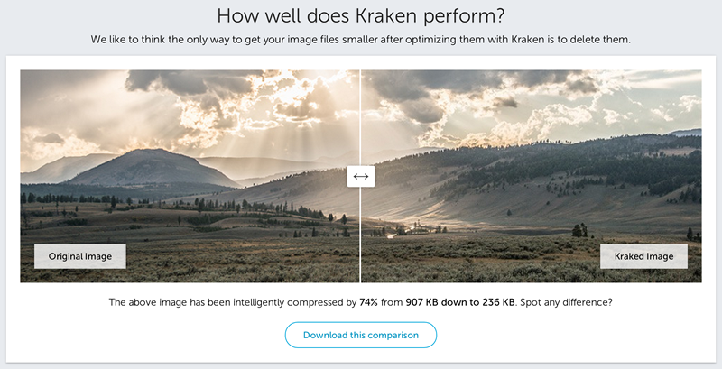

HTTP ArchieveHay una estadística: el contenido de imágenes ya representa el 62% del contenido total de Internet, es decir, más de la mitad del tráfico y el tiempo se utilizan para descargar imágenes. Desde la perspectiva de la optimización del rendimiento, las imágenes son sin duda uno de los puntos clave y calientes de la optimización. Tanto Google PageSpeed como las 14 reglas de optimización del rendimiento de Yahoo consideran la optimización de imágenes como un medio importante. Este artículo cubre todos los aspectos de la optimización de imágenes web, desde la selección básica del formato de imagen hasta las imágenes responsivas que aún no han sido ampliamente soportadas.
Me gusta lo que dice Google Web Fundamentals:
La optimización de imágenes es tanto un arte como una ciencia. Es un arte porque no existe el mejor esquema específico para comprimir una imagen individual, y es una ciencia porque muchos métodos y algoritmos bien desarrollados pueden reducir notablemente el tamaño de las imágenes. Para encontrar la configuración óptima de una imagen, es necesario analizar cuidadosamente muchas dimensiones: capacidades del formato, contenido de datos codificados, dimensiones en píxeles, etc.
¿Realmente se necesita usar imágenes?
¿Para lograr el efecto deseado, realmente se necesita una imagen? Esta es la primera pregunta que uno debe hacerse. Los navegadores y los estándares web se desarrollan muy rápido. Recuerdo que hace años, cuando usaba Microsoft Silverlight 1.0 para escribir un reproductor de video, el chino no podía mostrarse con fuentes personalizadas, por lo que escribí mucho código malo que generaba en el servidor imágenes con el texto requerido y las almacenaba en caché. Los usuarios las descargaban lentamente y los motores de búsqueda no podían indexar ese texto en absoluto.
Pero ahora es diferente: muchos efectos especiales (degradados, sombras, esquinas redondeadas, etc.) se pueden implementar con HTML, CSS, SVG, etc. puros. Para lograr estos efectos se necesitan desde unas pocas líneas de código hasta cargar bibliotecas adicionales (una foto normal es más grande queuna biblioteca de efectos muy potentetambién es mucho más grande). Estos efectos no solo requieren muy poco espacio, sino que también funcionan bien en múltiples dispositivos y resoluciones, e incluso en navegadores antiguos se puede lograr una buena degradación funcional. Por lo tanto, cuando existen tecnologías alternativas, se deberían elegir primero estas tecnologías, y solo agregar imágenes reales cuando sea imprescindible usarlas.
Tecnologías alternativas
- Efectos CSS, animaciones CSS. Proporcionan efectos independientes de la resolución, se muestran muy nítidos en cualquier resolución y nivel de zoom, y ocupan muy poco espacio.
- Fuentes web. Ahora incluso muchas bibliotecas de iconos se proporcionan como fuentes, manteniendo la capacidad de búsqueda del texto y ampliando los estilos de visualización.
Lo mejor es que los ingenieros front-end mantengan comunicación con los diseñadores y los gerentes de producto,para ayudarles a entender qué efectos son más "simples, eficientes y mantenibles". Después de todo, con CSS cambiar el radio de un rectángulo redondeado permite ver el efecto en tiempo real, mientras que con imágenes al menos hay que regenerar la imagen, recortarla y reemplazar el recurso. Retina, pantallas de alta resolución y dispositivos de múltiples tamaños han acelerado el desarrollo de efectos que no son imágenes. Piensa en lo horrible que se ve Windows 7 en pantallas de alta resolución; eso demuestra que los recursos de imagen nativos no son en absoluto cuantos más, mejor.
Elección del formato de imagen
Si el efecto realmente necesita una imagen para representarse, elegir el formato de imagen es el primer paso de la optimización. Las palabras que solemos escuchar incluyen imagen vectorial, mapa de bits, SVG, compresión con pérdida, compresión sin pérdida, etc. Primero explicamos las características de los diversos formatos de imagen.
| Formato de imagen | Método de compresión | Transparencia | Animación | Compatibilidad con navegadores | Escenarios adecuados |
|---|---|---|---|---|---|
| JPEG | Compresión con pérdida | No soporta | No soporta | Todos | Colores y formas complejas, especialmente fotografías |
| GIF | Compresión sin pérdida | Soporta | Soporta | Todos | Colores simples, animaciones |
| PNG | Compresión sin pérdida | Soporta | No soporta | Todos | Cuando se necesita transparencia |
| APNG | Compresión sin pérdida | Soporta | Soporta | Firefox Safari iOS Safari | Animaciones que requieren efectos de semitransparencia |
| WebP | Compresión con pérdida | Soporta | Soporta | Chrome Opera Android Chrome Android Browser | Colores y formas complejas Plataforma de navegador predecible |
| SVG | Compresión sin pérdida | Soporta | Soporta | Todos (IE8 y superiores) | Gráficos simples, se necesita una buena experiencia de escalado Se necesita controlar dinámicamente los efectos de imagen |
Entre ellos, los formatos APNG y WebP aparecieron más tarde,y aún no han sido adoptados por los estándares web.Solo se utilizan cuando se puede prever una plataforma específica o un entorno de navegador. Aunque ambos pueden degradar funcionalmente bien en entornos que no los soportan, esta sección no discutirá estos dos formatos por ahora. El proceso de selección del formato de imagen es el siguiente:

Para fotografías con colores ricos, JPG es la opción universal.
- La estructura del ojo humano es muy adecuada para ver fotografías comprimidas en JPG; puede ignorar y completar los detalles en el cerebro.
- JPG conserva bastante bien los detalles cuando la tasa de compresión no es alta.
- WebP puede reducir el volumen en un 30% en comparación con JPG, pero actualmentesu compatibilidad es deficiente.
Si se necesita una animación más universal, GIF es la única opción disponible.
- GIF admite un rango de 256 colores y solo soporta transparencia total / opacidad total.
- GIF puede presentar problemas como colores incompletos o bordes dentados al mostrar animaciones con colores ricos.
Si la imagen se compone de formas geométricas estándar, o si es necesario controlar dinámicamente sus efectos de visualización mediante programas, se puede considerar el formato SVG.
- SVG es un gráfico vectorial definido con XML; las imágenes generadas se pueden escalar libremente en varias resoluciones.
- En SVG se pueden transformar libremente los efectos de la imagen mediante interfaces como JavaScript, y se pueden rotar, mover, cambiar de color libremente, etc., en algunos de sus elementos.
Si se necesita mostrar imágenes con colores ricos de forma nítida, PNG es mejor.
- PNG-8 puede mostrar 256 colores, pero también admite 256 niveles de transparencia. Por lo tanto, en situaciones con pocos colores pero que requieren semitransparencia (como los emoticonos animados grandes de WeChat), se puede considerar PNG-8.
- PNG-24 puede mostrar color verdadero, pero no soporta transparencia. Se recomienda para imágenes con colores ricos (como capturas de pantalla o diseños de interfaz).
- PNG-32 puede mostrar color verdadero y soporta 256 niveles de transparencia; tiene el mejor efecto pero también el mayor tamaño.
Elección del tamaño de imagen
El tamaño solía ser el tema que menos necesitaba discusión, pero desde que apareció Retina, el mundo se ha vuelto mucho más complejo. Sobre los píxeles y tamaños en dispositivos móviles, hay suficiente contenido para escribir un artículo extenso. Sugiero a quienes quieran conocer los detalles que consulten el siguiente artículo:
Breve introducción al desarrollo web móvil (Parte 1): Conceptos profundos
Aquí solo hablamos de las partes y conclusiones que nos interesan. Necesitamos distinguir diferentes tipos de píxeles: píxeles CSS y píxeles de dispositivo. Un píxel CSS puede contener múltiples píxeles de dispositivo. Para las imágenes, en pantallas de alto DPI se necesitan imágenes de mayor resolución. Si hablamos de Retina, entonces se necesita una imagen con el doble de resolución (casi cuatro veces el tamaño). Aquí casi no hay margen para trucos: la pantalla es así de grande, y la imagen necesaria es así de grande. (¿Por qué la paloma es tan grande? ^_^)

Lo que podemos controlar es mostrar imágenes del tamaño "exacto" necesario. Por ejemplo, en la pantalla, mediante CSS olos atributos width/height de la etiqueta, si se ajusta una imagen de 200x200 a un tamaño de 100x100, entonces hay (200x200)-(100x100)=30000 píxeles desperdiciados, lo que representa el 75% del tamaño de la imagen!
La razón de un desperdicio tan grande es que el tamaño de la imagen es básicamente proporcional al área, y proporcional al cuadrado del ancho y la altura. Por lo tanto, calcular correctamente el tamaño de la imagen que el cliente realmente muestra puede reducir en gran medida el tamaño de la imagen. Incluso si solo se desperdician 10px tanto en largo como en ancho, cuando la imagen es lo suficientemente grande, esta parte también tendrá un gran impacto.
Imágenes responsivas
Arriba mencionamos mostrar imágenes del tamaño "exacto" que el cliente necesita; suena fácil, ¿no? Pero cuando apareció el diseño responsivo, esto se volvió extremadamente difícil. Tenemos que admitir innumerables dispositivos desde 1920 de ancho hasta 320 de ancho. Si usamos imágenes de 1920 de ancho, en dispositivos pequeños (que suelen ser más sensibles a la velocidad de red y al tráfico) cada usuario pagará un ancho de banda y un tiempo de espera extra. Si usamos imágenes de 320 de ancho, en una pantalla de 1920 sería tan inaceptable como usar DOS en una pantalla de alta definición.
Naturalmente, necesitamos que las imágenes también se carguen de forma "responsiva", cargando imágenes de diferentes tamaños según el dispositivo. Las imágenes responsivas aún no están en los estándares web, y su implementación tiene muchos inconvenientes y limitaciones de compatibilidad. Sugiero consultar este artículo del equipo EFE de Baidu:
Imágenes responsivas en la práctica
Aunque las imágenes responsivasaún no se han convertido en un estándar,son una herramienta poderosa para la optimización de imágenes web. Una vez que sean ampliamente soportadas, no habrá método de optimización más efectivo que reducir el tamaño de las imágenes.Optimizar JPG y PNG
Después de elegir el formato de imagen correcto y generar la imagen con el tamaño adecuado, aún necesitamos optimizar aún más la imagen. Esta optimización generalmente se realiza en dos pasos:
- Optimización con pérdida: eliminar colores que no aparecen o que aparecen muy raramente, y fusionar colores similares adyacentes. Este paso no es obligatorio; por ejemplo, el formato PNG pasa directamente al siguiente paso.
- Optimización sin pérdida: comprimir datos y eliminar información innecesaria.
Después de generar imágenes en formatos JPG y PNG, generalmente todavía hay espacio para una mayor optimización. Por ejemplo, las fotografías en formato JPG pueden llevar información Exif de la cámara, y las imágenes PNG pueden contener información de capas de software como Fireworks. Después de eliminar esta información adicional, también se puede optimizar reduciendo la paleta de colores de la imagen, eliminando colores que no aparecen y fusionando colores idénticos adyacentes. No repetiremos aquí el contenido teórico; solo presentaremos las herramientas de optimización disponibles en la práctica.
Hay una serie de herramientas para imágenes en diferentes formatos. Estas herramientas tienen más esquemas de ajuste de parámetros. Algunas herramientas de ajuste comunes son:
| Herramienta | Uso |
|---|---|
| jpegtran | Optimizar imágenes JPG |
| OptiPNG | Optimización PNG sin pérdida |
| AdvPNG | Optimización PNG sin pérdida |
| PNGQuant | Optimización PNG con pérdida |
Si realmente necesitas buscar la compresión extrema de varios tipos de imágenes, puedes consultar la documentación de estas herramientas. Sin embargo, para aplicaciones web generales, donde se enfrentan a una gran variedad de imágenes, es casi imposible implementar la configuración independiente de cada herramienta en el proyecto. Por lo tanto, se recomienda utilizar las siguientes herramientas para la optimización. Estas herramientas suelen utilizar una o varias de las herramientas de optimización de la tabla anterior.
ImageOptim (Mac)
Página principal:https://imageoptim.com/
Una excelente herramienta de optimización de imágenes para la plataforma Mac. Solo necesitas arrastrar la imagen a optimizar a ImageOptim y se completará la optimización de la imagen. También ofrece muchas opciones de configuración; actualmente admite la optimización de JPG y PNG. Es la herramienta que más uso al escribir artículos: arrastro las imágenes utilizadas en el sitio web y ¡la optimización está lista!

Kraken (Web)
Página principal:https://kraken.io/
En el modo gratuito puedes subir imágenes, y después de la optimización se pueden descargar en un paquete. Muchas empresas extranjeras también eligen su servicio de pago. Probé personalmente Kraken; los resultados de optimización de imágenes suelen ser aproximadamente un 3% más pequeños que ImageOptim, con buenos resultados y, por supuesto, también un buen precio. Es adecuado para quienes tienen necesidades ocasionales de optimización de imágenes, o para situaciones en las que no se dispone de software de optimización en la máquina de desarrollo.

Zhitu (Web)
Página principal:http://zhitu.tencent.com/
El equipo ISUX de Tencent tiene un artículo que presenta Zhitu:http://isux.tencent.com/zhitu.html
¡El producto nacional debe ser autosuficiente! La herramienta Zhitu de Tencent se lanzó hace poco, pero en las pruebas reales funciona muy bien, y además ofrecesoporte de automatización para Gulp, esto se presentará en el capítulo de optimización automática más adelante. Solo quiero dar un consejo: la página principal de Kraken es cientos de veces más bonita que la de Zhitu... Además, poner el PNG antes de la compresión y el JPG después de la compresión uno al lado del otro para comparar tamaños, ¿de verdad no importa?

Optimizar SVG
Todos los navegadores modernos admiten gráficos vectoriales escalables (SVG). SVG es un formato de imagen basado en XML, adecuado para imágenes bidimensionales. Puedes incrustar el marcado SVG directamente en una página web, o incrustarlo como un recurso externo. Puedes crear archivos SVG con la mayoría de los software de dibujo vectorial. Este es un gráfico SVG simple:

Este círculo tiene contorno negro y fondo rojo, exportado directamente desde Adobe Illustrator. En él se puede ver una gran cantidad de metadatos, como información de capas, comentarios, espacios de nombres XML, etc. Por lo general, estos datos no son necesarios al renderizar recursos en el navegador. Por lo tanto, necesitamos usar algunas herramientas para eliminar estos metadatos innecesarios y conservar solo el marcado imprescindible.
SVGOLas herramientas pueden reducir el tamaño de los archivos SVG. En este ejemplo, SVGO puede reducir el tamaño del archivo SVG generado por Illustrator en un 58%, de 470 bytes a 199 bytes. Dado que SVG es un formato basado en XML y esencialmente texto plano, también se puede usar la compresión GZIP para reducir el tamaño de la transmisión. Por supuesto, esto requiere cierta configuración del servidor, por ejemplo, configurar en el servidor Apache:
AddType image/svg+xml .svg AddOutputFilterByType DEFLATE image/svg+xml
para habilitar la compresión GZip para archivos SVG (por supuesto, primero debes cargar el módulo deflate y configurarlo adecuadamente; la configuración de GZip está fuera del alcance de este artículo; por favor, busca esta parte en Google por tu cuenta).
Optimizar GIF y APNG
GIF tiene muchas ventajas: cuando el número de colores es bajo, puede reducir considerablemente el tamaño de la imagen, y además es el único formato de imagen que puede mostrar animaciones de manera relativamente universal. No estoy muy familiarizado con el principio de optimización del formato GIF; simplemente uso herramientas de compresión establecidas directamente en el proyecto. En la siguiente secciónOptimización automáticaEn el capítulo sobre Grunt, se presentará el método de optimización automática mediante Grunt Task.
En cuanto a APNG, actualmente el soporte de los navegadores para él todavía no es muy bueno. Sin embargo, en escenarios que admiten HTML5, hay herramientas maduras de código abiertoapng-canvasque se pueden utilizar para admitir APNG.

El equipo ISUX de Tencent tiene un artículo que presentaiSpartala herramienta:http://isux.tencent.com/introduction-of-apng.html. Esta es actualmente casi la única herramienta que puede procesar archivos APNG por lotes. Los compañeros interesados pueden obtener más información en ese artículo.
Optimización automática
Ya hemos hablado mucho sobre métodos y herramientas para optimizar imágenes en diferentes formatos. Optimizar imágenes requiere mucho trabajo repetitivo; como ingeniero, uno claramente no toleraría esto. Por lo tanto, han surgido muchas herramientas para optimizar imágenes automáticamente. Aquí presentaré principalmente tres métodos: CDN, Grunt/Gulp y Google PageSpeed.
Optimización automática: CDN
En cuanto al uso de CDN para optimizar imágenes automáticamente, rara vez he visto este tipo de servicio en proveedores de CDN extranjeros. En cambio, dos CDN emergentes importantes en ChinaQiniu和Upyunhan hecho mucho trabajo en este aspecto. Su método de trabajo es el siguiente: los parámetros de la URL al solicitar imágenes al CDN incluyen parámetros de procesamiento de imagen (formato, ancho y alto, etc.). El servidor CDN genera la imagen requerida según la solicitud y la envía al navegador del usuario.
La interfaz de procesamiento de imágenes de Qiniu Cloud Storagees extremadamente rica y cubre la mayoría de las operaciones básicas de imágenes, por ejemplo:Recorte de imágenes: admite múltiples modos de recorte (como por lado largo, lado corto, relleno, estiramiento, etc.)
- Conversión de formato de imagen: admite JPG, GIF, PNG, WebP, etc., y admite diferentes tasas de compresión de imagen.
- Procesamiento de imágenes: admite marcas de agua, desenfoque gaussiano, procesamiento de punto focal, etc.
- El uso de la interfaz de procesamiento de imágenes de Qiniu Cloud Storage no es complicado; por ejemplo, esta imagen original:
Solicitamos mediante la siguiente URL, recortando la parte central y reduciendo proporcionalmente para generar una miniatura de 200x200:
Optimización automática: Grunt/Gulp
http://qiniuphotos.qiniudn.com/gogopher.jpg?imageView2/1/w/200/h/200

Optimización automática: Grunt/Gulp
El trabajo repetitivo de los ingenieros front-end, como combinar recursos estáticos, comprimir archivos JS y CSS, compilar SASS, etc., se puede realizar por lotes con herramientas de automatización como Grunt. La optimización de imágenes también es así.grunt-imagegrunt-image es muy potente. Según la introducción de su autor, las herramientas de optimización de imágenes que carga internamente incluyen pngquant, optipng, advpng, zopflipng, pngcrush, pngout, mozjpeg, jpegRecompress, jpegoptim, gifsicle y svgo. Admite la optimización automática por lotes de PNG, JPG, SVG y GIF, con buena velocidad. El método de configuración admite optimización de una sola imagen y optimización de todo el directorio:
Optimización automática: Google PageSpeed
module.exports = function (grunt) {
grunt.initConfig({
image: {
// 指定单独的图片优化
static: {
options: {
pngquant: true,
optipng: true,
advpng: true,
zopflipng: true,
pngcrush: true,
pngout: true,
mozjpeg: true,
jpegRecompress: true,
jpegoptim: true,
gifsicle: true,
svgo: true
},
files: {
'dist/img.png': 'src/img.png',
'dist/img.jpg': 'src/img.jpg',
'dist/img.gif': 'src/img.gif',
'dist/img.svg': 'src/img.svg'
}
},
// 指定图片目录进行优化
dynamic: {
files: [{
expand: true,
cwd: 'src/',
src: ['**/*.{png,jpg,gif,svg}'],
dest: 'dist/'
}]
}
}
});
grunt.loadNpmTasks('grunt-image');
};

Optimización automática: Google PageSpeed
Este módulo de servidor se puede cargar en Apache o Nginx, y se realiza la optimización automática mediante la configuración en el archivo de configuración del servidor. Hay opciones relacionadas para la conversión de formato de imagen, optimización de imágenes e incluso LazyLoad de imágenes. Esta parte se extendería mucho; los interesados deben consultar el manual de Google.Google PageSpeedFuente: http://blog.cabbit.me/web-image-optimization
Diez lenguajes de programación que deberías aprender en 2014
Haz clic para compartir notas
Cancelar